Summary
This experiment investigates soccer passing drill design. Plackett-Burman screening of pass distance, player count, tempo, rest interval, and cone spacing for passing accuracy and decision speed.
The design varies 5 factors: pass dist m (m), ranging from 5 to 20, player count (players), ranging from 4 to 10, tempo bpm (bpm), ranging from 60 to 120, rest sec (sec), ranging from 10 to 60, and cone spacing m (m), ranging from 2 to 8. The goal is to optimize 2 responses: accuracy pct (%) (maximize) and decision speed ms (ms) (minimize). Fixed conditions held constant across all runs include ball type = size_5, surface = artificial_turf.
A Plackett-Burman screening design was used to efficiently test 5 factors in only 8 runs. This design assumes interactions are negligible and focuses on identifying the most influential main effects.
Key Findings
For accuracy pct, the most influential factors were rest sec (57.1%), tempo bpm (35.7%), player count (7.1%). The best observed value was 83.0 (at pass dist m = 20, player count = 4, tempo bpm = 60).
For decision speed ms, the most influential factors were pass dist m (38.9%), rest sec (31.6%), tempo bpm (10.5%). The best observed value was 632.0 (at pass dist m = 20, player count = 10, tempo bpm = 120).
Recommended Next Steps
- Follow up with a response surface design (CCD or Box-Behnken) on the top 3–4 factors to model curvature and find the true optimum.
- Consider whether any fixed factors should be varied in a future study.
- The screening results can guide factor reduction — drop factors contributing less than 5% and re-run with a smaller, more focused design.
Experimental Setup
Factors
| Factor | Low | High | Unit |
|---|
pass_dist_m | 5 | 20 | m |
player_count | 4 | 10 | players |
tempo_bpm | 60 | 120 | bpm |
rest_sec | 10 | 60 | sec |
cone_spacing_m | 2 | 8 | m |
Fixed: ball_type = size_5, surface = artificial_turf
Responses
| Response | Direction | Unit |
|---|
accuracy_pct | ↑ maximize | % |
decision_speed_ms | ↓ minimize | ms |
Configuration
{
"metadata": {
"name": "Soccer Passing Drill Design",
"description": "Plackett-Burman screening of pass distance, player count, tempo, rest interval, and cone spacing for passing accuracy and decision speed"
},
"factors": [
{
"name": "pass_dist_m",
"levels": [
"5",
"20"
],
"type": "continuous",
"unit": "m"
},
{
"name": "player_count",
"levels": [
"4",
"10"
],
"type": "continuous",
"unit": "players"
},
{
"name": "tempo_bpm",
"levels": [
"60",
"120"
],
"type": "continuous",
"unit": "bpm"
},
{
"name": "rest_sec",
"levels": [
"10",
"60"
],
"type": "continuous",
"unit": "sec"
},
{
"name": "cone_spacing_m",
"levels": [
"2",
"8"
],
"type": "continuous",
"unit": "m"
}
],
"fixed_factors": {
"ball_type": "size_5",
"surface": "artificial_turf"
},
"responses": [
{
"name": "accuracy_pct",
"optimize": "maximize",
"unit": "%"
},
{
"name": "decision_speed_ms",
"optimize": "minimize",
"unit": "ms"
}
],
"settings": {
"operation": "plackett_burman",
"test_script": "use_cases/218_soccer_passing_drill/sim.sh"
}
}
Experimental Matrix
The Plackett-Burman Design produces 8 runs. Each row is one experiment with specific factor settings.
| Run | pass_dist_m | player_count | tempo_bpm | rest_sec | cone_spacing_m |
|---|
| 1 | 20 | 10 | 120 | 10 | 2 |
| 2 | 5 | 4 | 120 | 60 | 2 |
| 3 | 5 | 10 | 60 | 60 | 2 |
| 4 | 20 | 10 | 120 | 60 | 8 |
| 5 | 5 | 10 | 60 | 10 | 8 |
| 6 | 20 | 4 | 60 | 60 | 8 |
| 7 | 5 | 4 | 120 | 10 | 8 |
| 8 | 20 | 4 | 60 | 10 | 2 |
Step-by-Step Workflow
1
Preview the design
$ python doe.py info --config use_cases/218_soccer_passing_drill/config.json
2
Generate the runner script
$ python doe.py generate --config use_cases/218_soccer_passing_drill/config.json \
--output use_cases/218_soccer_passing_drill/results/run.sh --seed 42
3
Execute the experiments
$ bash use_cases/218_soccer_passing_drill/results/run.sh
4
Analyze results
$ python doe.py analyze --config use_cases/218_soccer_passing_drill/config.json
5
Get optimization recommendations
$ python doe.py optimize --config use_cases/218_soccer_passing_drill/config.json
6
Generate the HTML report
$ python doe.py report --config use_cases/218_soccer_passing_drill/config.json \
--output use_cases/218_soccer_passing_drill/results/report.html
Features Exercised
| Feature | Value |
|---|
| Design type | plackett_burman |
| Factor types | continuous (all 5) |
| Arg style | double-dash |
| Responses | 2 (accuracy_pct ↑, decision_speed_ms ↓) |
| Total runs | 8 |
Analysis Results
Generated from actual experiment runs using the DOE Helper Tool.
Response: accuracy_pct
Top factors: rest_sec (57.1%), tempo_bpm (35.7%), player_count (7.1%).
Pareto Chart
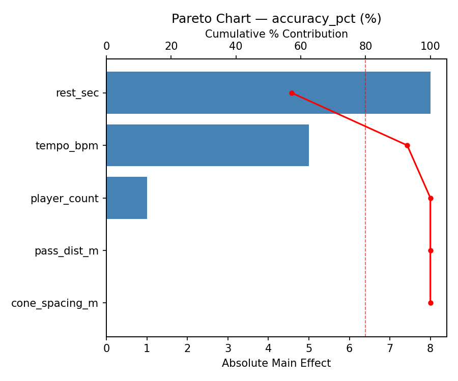
Main Effects Plot
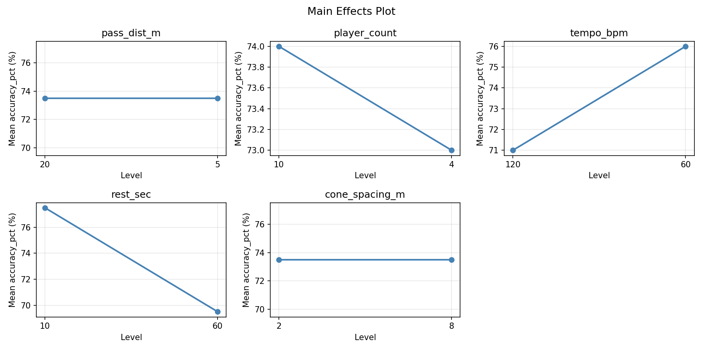
Response: decision_speed_ms
Top factors: pass_dist_m (38.9%), rest_sec (31.6%), tempo_bpm (10.5%).
Pareto Chart
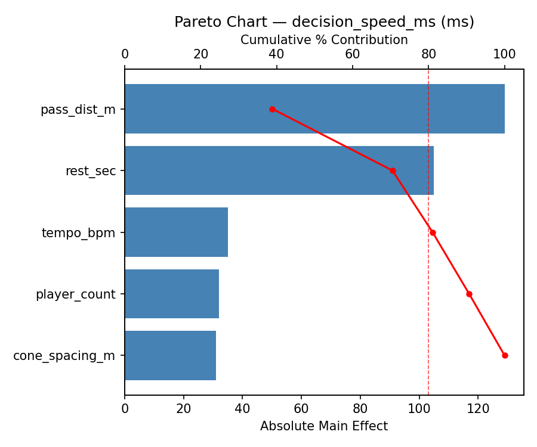
Main Effects Plot

Response Surface Plots
3D surfaces fitted with quadratic RSM. Red dots are observed data points.
accuracy pct pass dist m vs cone spacing m
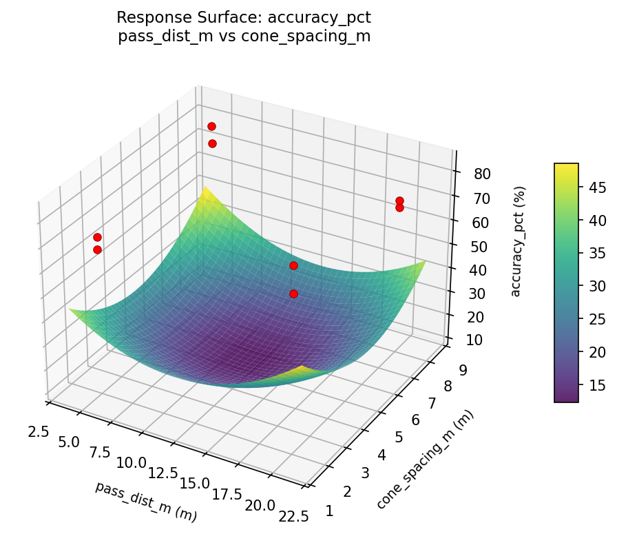
accuracy pct pass dist m vs player count

accuracy pct pass dist m vs rest sec
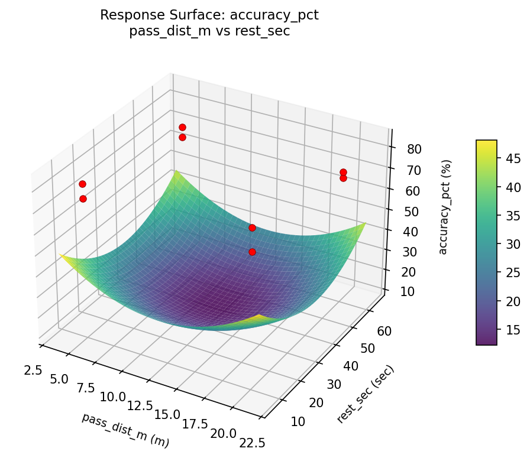
accuracy pct pass dist m vs tempo bpm

accuracy pct player count vs cone spacing m

accuracy pct player count vs rest sec
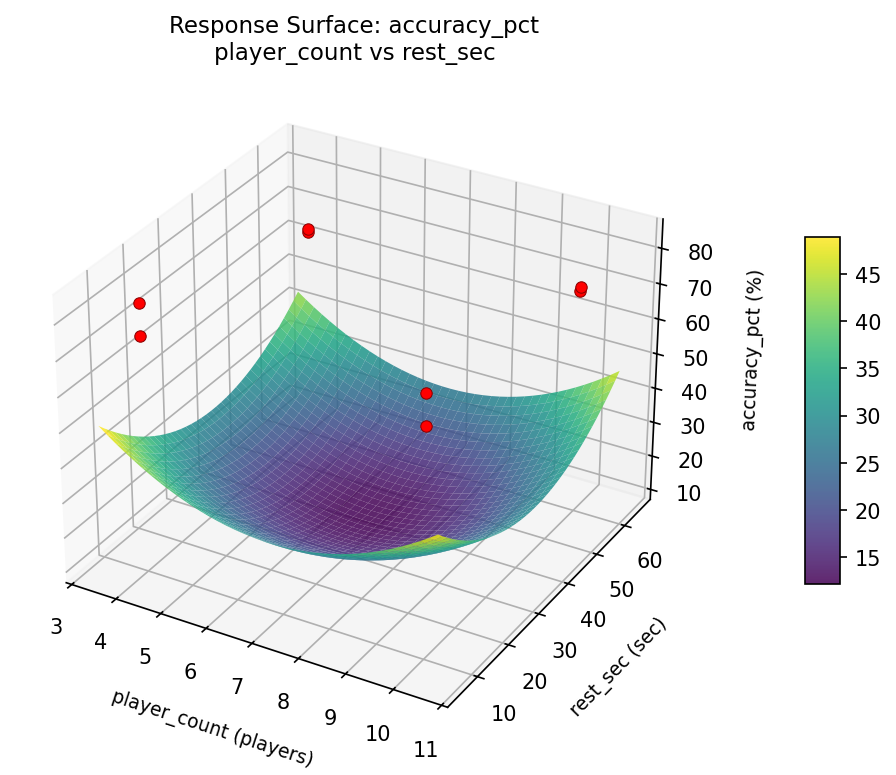
accuracy pct player count vs tempo bpm
accuracy pct rest sec vs cone spacing m

accuracy pct tempo bpm vs cone spacing m

accuracy pct tempo bpm vs rest sec

decision speed ms pass dist m vs cone spacing m
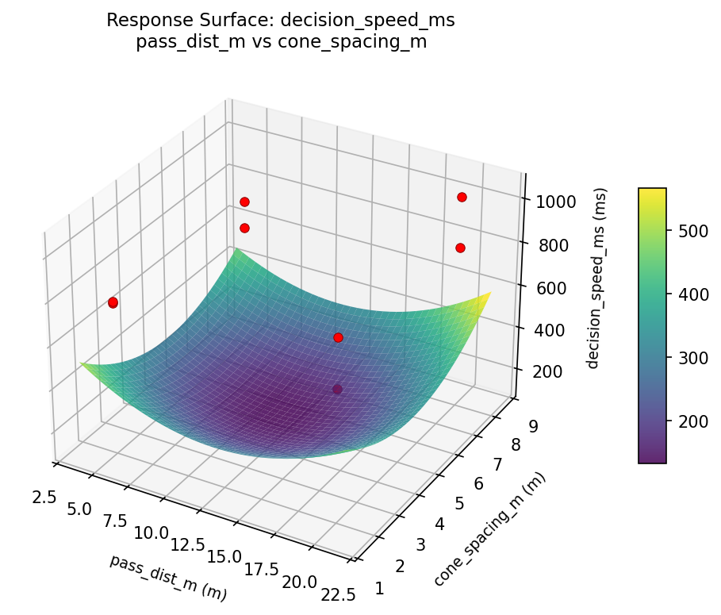
decision speed ms pass dist m vs player count

decision speed ms pass dist m vs rest sec
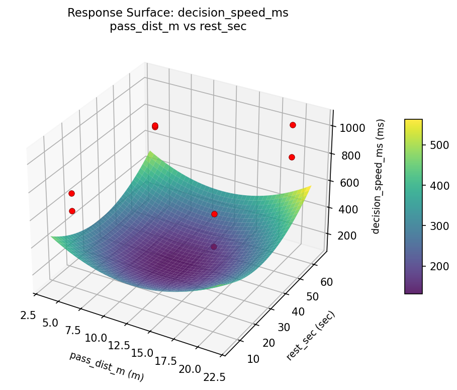
decision speed ms pass dist m vs tempo bpm
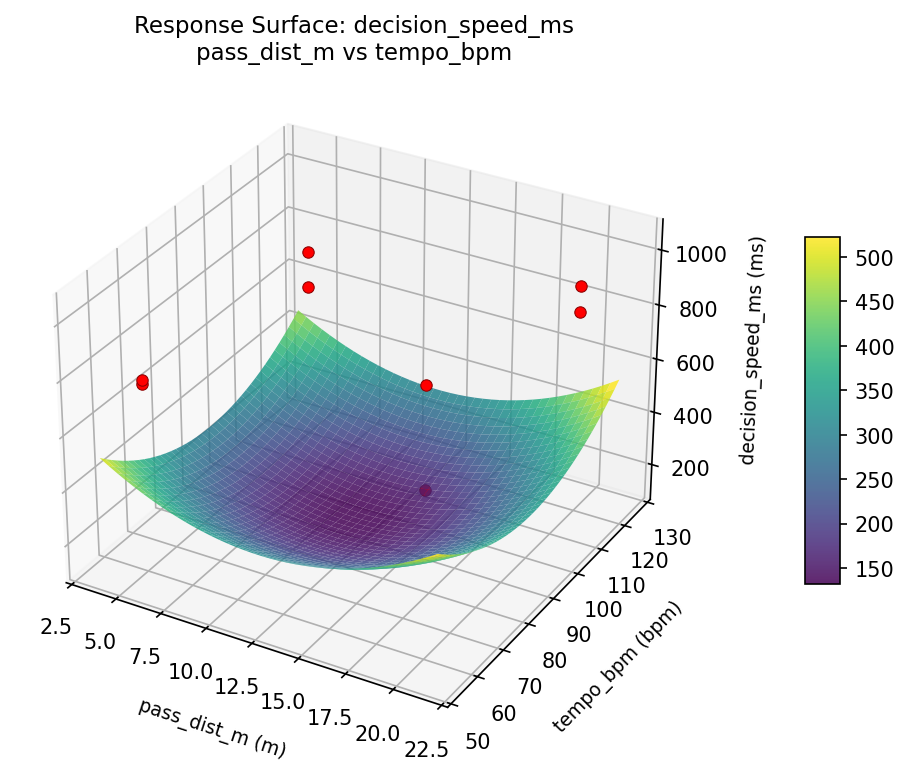
decision speed ms player count vs cone spacing m

decision speed ms player count vs rest sec
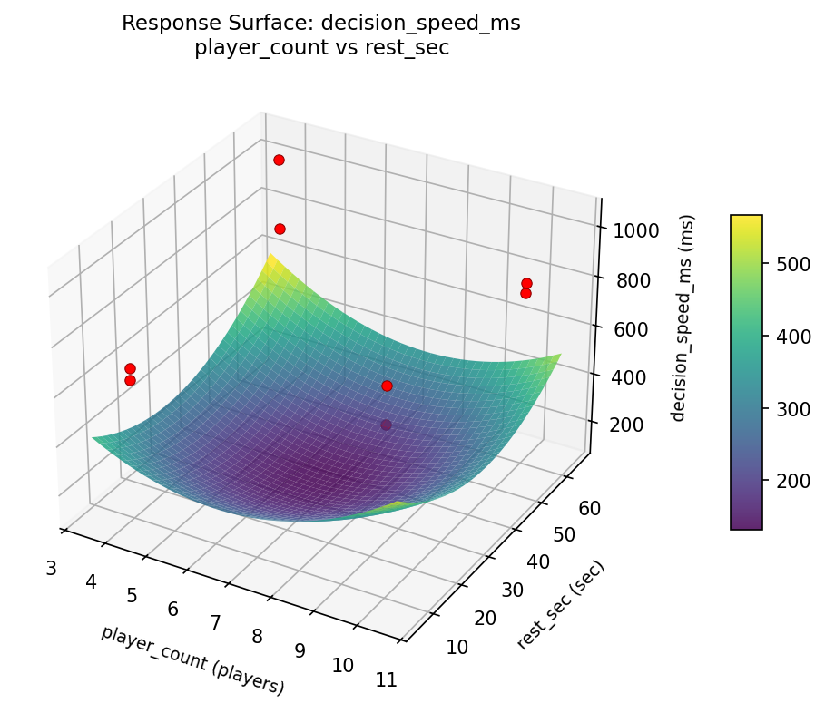
decision speed ms player count vs tempo bpm
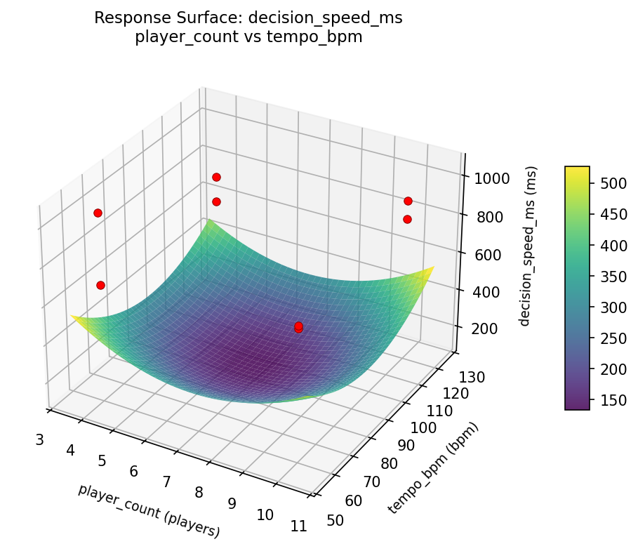
decision speed ms rest sec vs cone spacing m
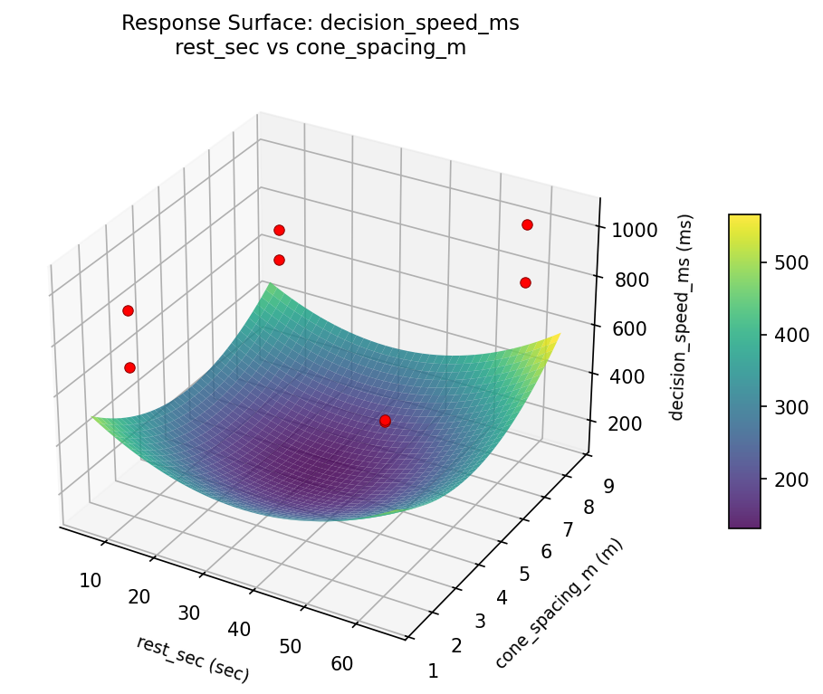
decision speed ms tempo bpm vs cone spacing m

decision speed ms tempo bpm vs rest sec

Full Analysis Output
RSM surface: rsm_accuracy_pct_pass_dist_m_vs_player_count.png
RSM surface: rsm_accuracy_pct_pass_dist_m_vs_tempo_bpm.png
RSM surface: rsm_accuracy_pct_pass_dist_m_vs_rest_sec.png
RSM surface: rsm_accuracy_pct_pass_dist_m_vs_cone_spacing_m.png
RSM surface: rsm_accuracy_pct_player_count_vs_tempo_bpm.png
RSM surface: rsm_accuracy_pct_player_count_vs_rest_sec.png
RSM surface: rsm_accuracy_pct_player_count_vs_cone_spacing_m.png
RSM surface: rsm_accuracy_pct_tempo_bpm_vs_rest_sec.png
RSM surface: rsm_accuracy_pct_tempo_bpm_vs_cone_spacing_m.png
RSM surface: rsm_accuracy_pct_rest_sec_vs_cone_spacing_m.png
RSM surface: rsm_decision_speed_ms_pass_dist_m_vs_player_count.png
RSM surface: rsm_decision_speed_ms_pass_dist_m_vs_tempo_bpm.png
RSM surface: rsm_decision_speed_ms_pass_dist_m_vs_rest_sec.png
RSM surface: rsm_decision_speed_ms_pass_dist_m_vs_cone_spacing_m.png
RSM surface: rsm_decision_speed_ms_player_count_vs_tempo_bpm.png
RSM surface: rsm_decision_speed_ms_player_count_vs_rest_sec.png
RSM surface: rsm_decision_speed_ms_player_count_vs_cone_spacing_m.png
RSM surface: rsm_decision_speed_ms_tempo_bpm_vs_rest_sec.png
RSM surface: rsm_decision_speed_ms_tempo_bpm_vs_cone_spacing_m.png
RSM surface: rsm_decision_speed_ms_rest_sec_vs_cone_spacing_m.png
=== Main Effects: accuracy_pct ===
Factor Effect Std Error % Contribution
--------------------------------------------------------------
rest_sec -8.0000 2.0266 57.1%
tempo_bpm 5.0000 2.0266 35.7%
player_count -1.0000 2.0266 7.1%
pass_dist_m 0.0000 2.0266 0.0%
cone_spacing_m 0.0000 2.0266 0.0%
=== Interaction Effects: accuracy_pct ===
Factor A Factor B Interaction % Contribution
------------------------------------------------------------------------
pass_dist_m cone_spacing_m 8.0000 28.6%
pass_dist_m player_count -5.0000 17.9%
player_count cone_spacing_m -4.0000 14.3%
tempo_bpm rest_sec -4.0000 14.3%
player_count rest_sec -3.0000 10.7%
tempo_bpm cone_spacing_m -3.0000 10.7%
pass_dist_m tempo_bpm 1.0000 3.6%
pass_dist_m rest_sec 0.0000 0.0%
player_count tempo_bpm 0.0000 0.0%
rest_sec cone_spacing_m 0.0000 0.0%
=== Summary Statistics: accuracy_pct ===
pass_dist_m:
Level N Mean Std Min Max
------------------------------------------------------------
20 4 73.5000 6.5574 68.0000 83.0000
5 4 73.5000 5.8023 67.0000 81.0000
player_count:
Level N Mean Std Min Max
------------------------------------------------------------
10 4 74.0000 4.6904 71.0000 81.0000
4 4 73.0000 7.3485 67.0000 83.0000
tempo_bpm:
Level N Mean Std Min Max
------------------------------------------------------------
120 4 71.0000 2.9439 67.0000 74.0000
60 4 76.0000 7.1647 68.0000 83.0000
rest_sec:
Level N Mean Std Min Max
------------------------------------------------------------
10 4 77.5000 5.3229 72.0000 83.0000
60 4 69.5000 2.3805 67.0000 72.0000
cone_spacing_m:
Level N Mean Std Min Max
------------------------------------------------------------
2 4 73.5000 6.7577 67.0000 83.0000
8 4 73.5000 5.5678 68.0000 81.0000
=== Main Effects: decision_speed_ms ===
Factor Effect Std Error % Contribution
--------------------------------------------------------------
pass_dist_m -129.0000 45.8402 38.9%
rest_sec 105.0000 45.8402 31.6%
tempo_bpm 35.0000 45.8402 10.5%
player_count -32.0000 45.8402 9.6%
cone_spacing_m 31.0000 45.8402 9.3%
=== Interaction Effects: decision_speed_ms ===
Factor A Factor B Interaction % Contribution
------------------------------------------------------------------------
player_count rest_sec 144.0000 15.7%
tempo_bpm cone_spacing_m 144.0000 15.7%
player_count tempo_bpm 129.0000 14.0%
rest_sec cone_spacing_m 129.0000 14.0%
pass_dist_m cone_spacing_m -105.0000 11.4%
player_count cone_spacing_m 85.0000 9.2%
tempo_bpm rest_sec 85.0000 9.2%
pass_dist_m player_count -35.0000 3.8%
pass_dist_m tempo_bpm 32.0000 3.5%
pass_dist_m rest_sec -31.0000 3.4%
=== Summary Statistics: decision_speed_ms ===
pass_dist_m:
Level N Mean Std Min Max
------------------------------------------------------------
20 4 861.0000 153.7812 680.0000 1045.0000
5 4 732.0000 66.9477 632.0000 773.0000
player_count:
Level N Mean Std Min Max
------------------------------------------------------------
10 4 812.5000 66.5157 758.0000 906.0000
4 4 780.5000 184.7097 632.0000 1045.0000
tempo_bpm:
Level N Mean Std Min Max
------------------------------------------------------------
120 4 779.0000 114.1490 632.0000 906.0000
60 4 814.0000 159.3047 680.0000 1045.0000
rest_sec:
Level N Mean Std Min Max
------------------------------------------------------------
10 4 744.0000 119.8332 632.0000 906.0000
60 4 849.0000 132.3430 765.0000 1045.0000
cone_spacing_m:
Level N Mean Std Min Max
------------------------------------------------------------
2 4 781.0000 93.3559 680.0000 906.0000
8 4 812.0000 172.8255 632.0000 1045.0000
Pareto chart (accuracy_pct): use_cases/218_soccer_passing_drill/results/analysis/pareto_accuracy_pct.png
Pareto chart (decision_speed_ms): use_cases/218_soccer_passing_drill/results/analysis/pareto_decision_speed_ms.png
Main effects (accuracy_pct): use_cases/218_soccer_passing_drill/results/analysis/main_effects_accuracy_pct.png
Main effects (decision_speed_ms): use_cases/218_soccer_passing_drill/results/analysis/main_effects_decision_speed_ms.png
Optimization Recommendations
=== Optimization: accuracy_pct ===
Direction: maximize
Best observed run: #3
pass_dist_m = 20
player_count = 4
tempo_bpm = 60
rest_sec = 10
cone_spacing_m = 2
Value: 83.0
RSM Model (linear, R² = 0.5022, Adj R² = -0.7424):
Coefficients:
intercept +73.5000
pass_dist_m +0.7500
player_count +0.2500
tempo_bpm -3.5000
rest_sec +0.0000
cone_spacing_m -1.2500
Predicted optimum (from linear model):
pass_dist_m = 20
player_count = 4
tempo_bpm = 60
rest_sec = 10
cone_spacing_m = 2
Predicted value: 78.7500
Model quality: Moderate fit — use predictions directionally, not precisely.
Factor importance:
1. tempo_bpm (effect: 7.0, contribution: 60.9%)
2. cone_spacing_m (effect: -2.5, contribution: 21.7%)
3. pass_dist_m (effect: -1.5, contribution: 13.0%)
4. player_count (effect: -0.5, contribution: 4.3%)
5. rest_sec (effect: 0.0, contribution: 0.0%)
=== Optimization: decision_speed_ms ===
Direction: minimize
Best observed run: #6
pass_dist_m = 20
player_count = 10
tempo_bpm = 120
rest_sec = 60
cone_spacing_m = 8
Value: 632.0
RSM Model (linear, R² = 0.1302, Adj R² = -2.0443):
Coefficients:
intercept +796.5000
pass_dist_m +19.2500
player_count +5.5000
tempo_bpm +17.2500
rest_sec -31.2500
cone_spacing_m -15.5000
Predicted optimum (from linear model):
pass_dist_m = 20
player_count = 10
tempo_bpm = 120
rest_sec = 10
cone_spacing_m = 2
Predicted value: 885.2500
Model quality: Weak fit — consider adding center points or using a different design.
Factor importance:
1. rest_sec (effect: -62.5, contribution: 35.2%)
2. pass_dist_m (effect: -38.5, contribution: 21.7%)
3. tempo_bpm (effect: -34.5, contribution: 19.4%)
4. cone_spacing_m (effect: -31.0, contribution: 17.5%)
5. player_count (effect: -11.0, contribution: 6.2%)